건축설비기사 (2020-09-26 기출문제)
1과목: 건축일반
1. 열전달에 관한 설명으로 옳은 것은?
- 열류량은 온도구배와 물체의 열전도율에 반비례한다.
- 물체중에 온도차가 발생하면 열은 저온측에서 고온측으로 흐른다.
- 벽체표면과 이에 접하는 유체와의 전열현상을 대류에 의한 열전달이다.
- 열류량은 표면온도와 유체온도의 차에 반비례한다.
(정답률: 62%)

2. 철근콘크리트 구조의 특징에 관한 설명으로 옳지 않은 것은?
- 인장력을 받는 부분에는 철근을 보강하여야 한다.
- 철근을 콘크리트로 피복하므로 내구성이 우수하다.
- 철골구조에 비하여 장스팬 건축물이나 연약지반 조건의 건축에도 유리하게 사용된다.
- 철골구조에 비하여 내화성이 우수하다.
(정답률: 71%)
3. 상점의 쇼윈도(show window)에 관한 설명으로 옳지 않은 것은?
- 쇼윈도의 크기는 상점의 종류와는 관계가 없다.
- 쇼윈도의 바닥높이는 상품의 종류에 따라 다르다.
- 상점규모가 2·3층인 경우, 쇼윈도를 입체적으로 취급하여 한눈에 상점에 대한 이미지를 강하게 주는 경우가 있다.
- 쇼윈도 내부의 밝기를 인공적으로 높게함으로써 쇼윈도의 반사를 방지할 수 있다.
(정답률: 81%)
4. 주택의 동선에 관한 설명으로 옳지 않은 것은?
- 동선이 가지는 요소는 빈도, 속도, 하중이다.
- 동선은 일상생활의 움직임을 표시하는 선이다.
- 개인권, 사회권, 가사노동권의 3개 동선이 서로 분리되어야 한다.
- 가사노동의 동선은 가능한 북쪽에 오도록 하고 가능한 길게 처리한다.
(정답률: 84%)
5. 도서관의 건축계획으로 옳지 않은 것은?
- 서고는 증축을 고려하여 계획한다.
- 열람실은 서고와 최대한 멀리 떨어져 위치시키는 것이 좋다.
- 아동 열람실은 자유롭게 책을 꺼내볼 수 있도록 자유개가식으로 한다.
- 참고실은 안정된 분위기를 갖고 일반열람실과는 별실로 목록실, 출납대 근처에 설치한다.
(정답률: 79%)
6. 단독주택의 이점을 최대한 살려 경계벽을 통해 주택영역을 구분한 것은?
- 타운 하우스
- 클럽 하우스
- 테라스 하우스
- 중정형 하우스
(정답률: 74%)
7. 프리스트레스트 콘크리트 구조에 관한 설명으로 옳은 것은?
- 장스팬 구조물보다는 단스팬 구조물에 적용하는 것이 효율적이다.
- 콘크리트의 압축응력이 생기는 부분에 미리 응력을 가한다.
- 프리텐션 공법은 부재 제작시 시스관을 미리 설치한다.
- 고강도 콘크리트 사용으로 부재 단면축소에 의한 구조물의 자중 경감효과가 있다.
(정답률: 38%)
8. 상점 계획에 관한 설명으로 옳지 않은 것은?
- 입장하는 손님과 종업원의 시선이 직접 마주치지 않게 한다.
- 고객 동선은 가급적 짧게 하고, 종업원 동선은 되도록 길게 한다.
- 손님쪽에서 상품이 효과적으로 보이도록 매장가구를 배치한다.
- 진열창의 상품은 도로에 선 사람의 눈높이보다 약간 낮게 하는 것이 좋다.
(정답률: 84%)
9. 철골구조의 특성에 관한 설명으로 옳지 않은 것은?
- 철근콘크리트구조에 비해 경량의 구조체를 만들 수 있다.
- 해체가 어렵고 재사용이 불가능하다.
- 재료 특성상 압축재는 좌굴에 대한 검토가 필요하다.
- 내화성이 낮아 내화피복이 필요하다.
(정답률: 74%)
10. 사무소의 코어계획 시 고려할 사항으로 옳지 않은 것은?
- 계단과 엘리베이터 및 화장실은 가능한 한 접근시킨다.
- 엘리베이터 홀이 출입구면에 근접해 있어야 한다.
- 코어내의 공간과 임대 사무실 사이의 동선은 간단해야 한다.
- 엘리베이터는 가급적 한 곳에 집중시킨다.
(정답률: 66%)
11. 다음 중 동일한 조건(하중, 기둥간격 등)에서 슬래브 두께가 가장 두꺼운 것은?
- 일방향 슬래브
- 이방향 슬래브
- 플랫 슬래브
- 플랫 플레이트
(정답률: 52%)
12. 다음 중 잔향시간 계산에 필요한 인자가 아닌 것은?
- 실용적
- 실내 전 표면적
- 음원의 음압
- 실의 평균 흡음률
(정답률: 60%)
13. 결로발생의 방지 방법으로 옳지 않은 것은?
- 실내에서 수증기 발생을 억제한다.
- 비난방실 등으로의 수증기 침입을 억제한다.
- 벽체의 표면온도를 실내공기의 노점온도보다 크게 한다.
- 적절한 투습저항을 갖춘 방습층을 단열재의 저온측에 설치한다.
(정답률: 69%)
14. 건축물에 작용하는 풍압력의 크기 산정과 가장 거리가 먼 요소는?
- 풍속
- 건축물의 형상
- 건축물의 높이
- 건축물의 중량
(정답률: 70%)
15. 노인 의료시설계획에 관한 설명으로 옳지 않은 것은?
- 환자들의 주 생활공간이 병동부가 되므로 병동부 설계 시 거주성 확보에 유의한다.
- 노인들의 방향감각 감퇴증세를 보완하기 위해 분명하고 단순한 동선을 구성한다.
- 간호공간은 행동장애와 합병증세 등의 복합성을 보완하기 위하여 분산배치에 의한 구성이 필요하다.
- 각종 질병 치료 시 신체능력의 회복과 보존을 위한 재활시설이 필요하다.
(정답률: 80%)
16. 실외 용적이 5000m3이고 필요 환기량이 10000m3/h 일 때, 환기횟수는 시간당 몇 회인가?
- 0.5회
- 1회
- 2회
- 4회
(정답률: 74%)
17. 아파트 평면형식 중에서 일조 및 통풍이 유리하고, 공용복도에 있어 프라이버시가 침해될 수 있으나 같은 층에 거주하는 사람과의 친교 기회가 많은 형식은?
- 홀형
- 집중형
- 편복도형
- 중복도형
(정답률: 81%)
18. 사무소 건축에서의 렌터블 비(rentable ratio)를 가장 잘 설명한 것은?
- 임대면적과 연면적의 비율
- 대지면적과 연면적의 비율
- 대지면적과 건축면적의 비율
- 대지면적과 주택호수의 비율
(정답률: 75%)
19. 학년과 학급을 없애고 학생들은 능력에 따라 교과를 선택하여 수업을 듣는 학교 운영방식은?
- 달톤형
- 플래툰형
- 종합교실형
- 특별교실형
(정답률: 65%)
20. 리조트호텔의 대지조건으로 가장 거리가 먼 것은?
- 연회 등을 위해 외래객에게 개방되고 교통이 편리한 도시 중심지에 위치해야 한다.
- 주위의 경치가 좋아야 한다.
- 물이 맑고 수원이 풍부해야 한다.
- 수해나 풍해 등으로부터 위험이 없어야 한다.
(정답률: 81%)
2과목: 위생설비
21. 90℃의 물 500kg과 30℃의 물 1000kg을 단열 혼합하였을 때 혼합된 물의 온도는?
- 20℃
- 30℃
- 40℃
- 50℃
(정답률: 66%)
22. 저탕조의 용량이 2m3이고 급탕배관 내의 전체 수량이 1m3일 때 개방형 팽창탱크의 용량은? (단, 급수의 밀도는 1.0g/cm3이고, 온수의 밀도는 0.983g/cm3이다.)
- 약 0.03m3
- 약 0.04m3
- 약 0.⑤m3
- 약 0.06m3
(정답률: 46%)
23. 수평주관 내의 공기가 감압되어 봉수가 파괴되는 현상으로 배수 수직관의 가까이에 설치된 세면기 등에서 일어나기 쉬운 봉수 파괴 원인은?
- 증발 작용
- 모세관 현상
- 유도사이펀 작용
- 운동량에 의한 관성
(정답률: 73%)
24. 건물 내의 급수 방식에 관한 설명으로 옳은 것은?
- 수도직결방식은 고층의 급수 방법에 적합하다.
- 고가수조방식에서의 급수압력은 항상 변동한다.
- 압력수조방식에서는 수조를 건물 상부에 설치해야 하므로 건축 구조상 부담이 된다.
- 펌프직송방식에서 펌프 운전방식은 펌프의대수를 제어하는 정속방식과 회전수를 제어하는 변속방식으로 분류할 수 있다.
(정답률: 69%)
25. 진공방지기(vaccum breaker)가 사용되는 대변기의 급수방식은?
- 하이탱크식
- 세정밸브식
- 사이펀식
- 로탱크식
(정답률: 66%)
26. 통기관에 관한 설명으로 옳지 않은 것은?
- 습통기관은 통기의 목적 외에 배수관으로도 이용되는 부분을 말한다.
- 결합통기관은 배수수직관 내의 압력변화를 방지 또는 완화하기 위해 설치한다.
- 도피통기관은 각개통기방식에서 담당하는 기구수가 많은 경우 발생하는 하수가스를 도피시키기 위하여 통기수직관에 연결시킨 관이다.
- 신정통기관은 최상부의 배수수평관이 배수수직관에 접속된 위치보다도 더욱 위로 배수수직관을 끌어올려 대기 중에 개구하여 통기관으로 사용하는 부분이다.
(정답률: 50%)
27. 펌프의 비속도 n을 나타내는 식으로 옳은 것은? (단, 회전수를 N, 최고 효율점의 토출량을 Q, 최고 효율점의 전양정을 H로 나타낸다.)
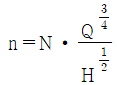
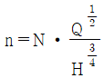
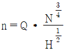
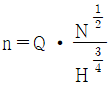
(정답률: 53%)
28. 다음 중 기구의 필요급수압력이 가장 작은 것은?
- 샤워
- 일반수전
- 대변기 세정밸브
- 소변기 세정밸브(스툴형 소변기)
(정답률: 66%)
29. 지름 150mm, 길이 320m인 원형관에 매초 60L의 물이 흐를 때, 관내의 마찰손실수두는? (단, 관마찰계수 f = 0.03 이다.)
- 약 3.4m
- 약 10.2m
- 약 37.7m
- 약 40.8m
(정답률: 52%)
30. 다음 중 급수관에서 수격작용의 발생 우려가 가장 높은 것은?
- 관의 분기
- 관경의 확대
- 관의 방향 전환
- 관내 유수의 급정지
(정답률: 76%)
31. 다음 중 간접배수로 하여야 하는 기구는?
- 욕조
- 세면기
- 대변기
- 세탁기
(정답률: 72%)
32. 양수량이 600L/min, 양정이 36m인 양수펌프의 축동력은? (단, 펌프의 효율은 70%이다.)
- 4.5 kW
- 5.0 kW
- 6.4 kW
- 7.1 kW
(정답률: 60%)
33. 유체의 성질과 관련하여 다음 설명이 의미하는 것은?
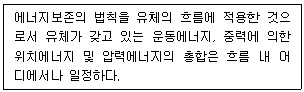
- 파스칼의 원리
- 스토크스의 원리
- 뉴턴의 점성법칙
- 베르누이의 정리
(정답률: 71%)
34. 간접가열식 급탕방식에 관한 설명으로 옳지 않은 것은?
- 난방용 보일러와 겸용할 수 있다.
- 보일러에서 만들어진 증기 또는 고온수를 열원으로 한다.
- 저압보일러를 사용할 수 없으며 중압 또는 고압보일러를 사용하여야 한다.
- 탱크에 가열코일을 설치하여 이 코일을 통해 물을 간접적으로 가열하는 방식이다.
(정답률: 73%)
35. 캐비테이션의 방지 방법으로 옳지 않은 것은?
- 흡입양정을 필요 이상으로 높에 하지 않는다.
- 흡입 조건이 나쁜 경우는 비속도를 작게 하기 위해 회전수가 작은 펌프를 사용한다.
- 흡수관을 가능한 한 짧고 굵게 함과 동시에 관내에 공기가 체류하지 않도록 배관한다.
- 설계상의 펌프 운전범위 내에서 항상 필요 NPSH가 유효NPSH보다 크게 되도록 배관계획을 한다.
(정답률: 68%)
36. 터빈펌프에 관한 설명으로 옳지 않은 것은?
- 펌프의 양수량은 축동력에 비례하여 증가한다.
- 토출밸브를 닫고 펌프를 운전하면 양수량이 0 이다.
- 최대효율로 운전하고 있을 때의 양정을 상용양정이라 한다.
- 펌프의 양정과 양수량은 펌프의 회전수가 변하여도 항상 일정하다.
(정답률: 61%)
37. 정화조의 유입수 BOD가 1000mg/L, 방류수 BOD가 400mg/L 일 때, BOD제거율은?
- 40%
- 50%
- 60%
- 70%
(정답률: 75%)
38. 물의 경도는 건축설비에서 중요하게 다루고 있다. 그 이유와 가장 거리가 먼 것은?
- 배관 내 스케일 발생 원인
- 급수펌프 소요 동력 증가 원인
- 열교환기의 열교환 효율 감소 원인
- 배관 내 유체의 흐름 저항 감소원인
(정답률: 54%)
39. 국소식 급탕방법에 관한 설명으로 옳지 않은 것은?
- 배관 및 기기로부터의 열손실이 많다.
- 건물완공 후에도 급탕개소의 증설이 비교적 쉽다.
- 급탕개소마다 가열기의 설치 스페이스가 필요하다.
- 주택 등에서는 난방 겸용의 온수보일러, 순간 온수기를 사용할 수 있다.
(정답률: 66%)
40. 종국유속과 관계있는 배관은?
- 기구배수관
- 배수수직관
- 배수수평지관
- 배수수평주관
(정답률: 57%)
3과목: 공기조화설비
41. 기온, 습도, 기류의 3요소의 조합에 의한 실내온열감각을 기온의 척도로 나타낸 것은?
- 작용온도(OT)
- 유효온도(ET)
- 수정유효온도(CET)
- 예상온냉감신고(PMV)
(정답률: 73%)
42. 급수로부터 각 유닛을 거쳐 나오는 총길이가 동일하므로 기기마다의 저항이 균일하게 되고, 따라서 유량을 균일하게 할 수 있는 배관 회로 방식은?
- 역환수방식
- 자연환수방식
- 간접환수방식
- 건식환수방식
(정답률: 73%)
43. 다음의 보일러 출력 표시방밥 중 가장 큰 값을 갖는 것은?
- 정미출력
- 상용출력
- 정격출력
- 과부하출력
(정답률: 62%)
44. 수배관에서 위치수두 10mAq, 압력수두 30mAqm, 속도 2.5m/s로 관 속을 흐르는 물의 전수두는?
- 13.06m
- 13.24m
- 40.32m
- 42.54m
(정답률: 58%)
45. 온수난방에 관한 설명으로 옳지 않은 것은?
- 온수의 현열을 이용하여 난방하는 방식이다.
- 한랭지에서는 운전정지 중 동결의 우려가 있다.
- 증기난방에 비해 예열시간이 짧아 간헐운전에 적합하다.
- 증기난방에 비해 난방부하 변동에 따른 온도조절이 용이하다.
(정답률: 74%)
46. 다음의 습공기 선도상에서 공기의 상태점 A가 C로 변하는 상태변화를 무엇이라 하는가?
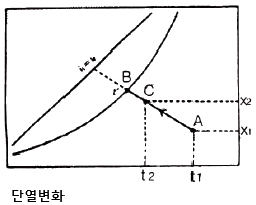
- 가열감습
- 가열가습
- 냉각감습
- 증발냉각
(정답률: 52%)
47. 상당외기온도차(ETD, Equivalent Temperature Difference)에 관한 설명으로 옳은 것은?
- 난방부하의 계산에 있어서, 벽체를 통한 손실열량을 계산할 때 사용한다.
- 냉방부하의 계산에 있어서, 벽체를 통한 취득열량을 계산할 때 사용한다.
- 벽체 외부에 흐르는 공기의 속도에 따른 열 전달량을 고려한 온도차이다.
- 주로 외기에 접하고 있지 않은 간막이 벽, 천장, 바닥 드응로부터 열전달량을 구하는데 사용한다.
(정답률: 55%)
48. 공조배관계에 부압방지를 위한 배관법으로 옳지 않은 것은?
- 순환펌프 토출측에 팽창탱크가 접속되는 것을 피한다.
- 순환펌프는 배관 도중 온도가 가장 높은 곳에 설치한다.
- 팽창탱크는 장치의 가장 높은 곳보다 더 높은 위치로 한다.
- 순환펌프는 배관 도중 가능한 한 압입양정이 높은 곳에 설치한다.
(정답률: 53%)
49. 공조방식 중 변풍량방식에 사용되는 변풍량 유닛에 관한 설명으로 옳지 않은 것은?
- 바이패스형은 덕트 내 정압변동이 없다.
- 유인유닛형은 실내의 2차 공기를 유인하므로 집진효과가 크다.
- 교축형은 덕트 내의 정압변동이 크므로 정압제어방식이 필요하다.
- 교축형은 부하변동에 따라 송풍량을 변화시키고송풍기를 제어하므로 동력이 절약된다.
(정답률: 50%)
50. 다음의 냉방부하 발생 요인 중 현열과 잠열 모두 갖는 것은?
- 인체발생열량
- 벽체로부터의 취득열량
- 유리로부터의 취득열량
- 덕트로부터의 취득열량
(정답률: 70%)
51. 다음 중 동관의 용도로 가장 부적절한 것은?
- 급수관
- 급탕관
- 증기관
- 냉온수관
(정답률: 70%)
52. 덕트에 관한 설명으로 옳지 않은 것은?
- 덕트의 보강을 위해서 다이아몬드 브레이크 등을 사용한다.
- 덕트를 분기할 경우 덕트 굽힘부 가까이에서 분기하는 것은 피하는 것이 좋다.
- 덕트의 굽힙부에서 곡률반경이 작거나 직각으로 구부러질 때 안내날개를 설치한다.
- 단면을 바꿀 때 확대부에서는 경사도 30°이하, 축소부에서는 경사도 45°이하가 되도록 한다.
(정답률: 59%)
53. 다음 중 유리창에 의한 일사 냉방부하 산정과 가장 관계가 먼 것은?
- 방위
- 유리면적
- 차폐계수
- 열관류율
(정답률: 49%)
54. 단효용 흡수식 냉동기와 비교한 2중 효용 흡수식 냉동기의 특징으로 옳은 것은?
- 고압응축기와 저압응축기가 있다.
- 고온증발기와 저온증발기가 있다.
- 고온발생기와 저온발생기가 있다.
- 냉각탑의 용량이 커진다.
(정답률: 51%)
55. 다음 그림과 같은 여과장치의 효율은?
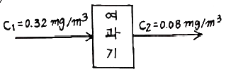
- 25%
- 66%
- 75%
- 83%
(정답률: 67%)
56. 공기조화기의 가열코일 입구와 출구에서 공기의 상태값이 변화하지 않는 것은?
- 엔탈피
- 상대습도
- 건구온도
- 절대습도
(정답률: 64%)
57. 다음 중 외주부(perimeter zone)의 부하변동에 가장 효과적으로 대응할 수 있는 공기조화방식은?
- 단일덕트 방식
- 각층 유닛방식
- 팬코일 유닛방식
- 멀티죤 유닛방식
(정답률: 65%)
58. 어느 사무실이 다음과 같은 조건에 있을 때, 이 사무실에 요구되는 환기량은?
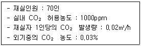
- 500 m3/h
- 1000 m3/h
- 1500 m3/h
- 2000 m3/h
(정답률: 51%)
59. 원형 덕트와 장방형 덕트의 환산식으로 옳은 것은? (단, d : 원형 덕트의 직경 또는 환산직경, a : 장방형 덕트의 장변길이, b : 장방형 덕트의 단변길이)
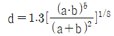
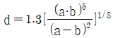
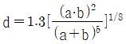
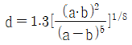
(정답률: 64%)
60. 어떤 송풍기의 회전속도가 460rpm 일 때 송풍기 전압은 32mmAq 이었다. 이 송풍기를 600rpm 으로 운전하였을 때의 송풍기 전압은?
- 32.0mmAq
- 41.7mmAq
- 54.4mmAq
- 71.00
(정답률: 46%)
4과목: 소방 및 전기설비
61. 다음 설명에 알맞은 화재의 종류는?
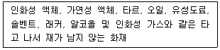
- A급 화재
- B급 화재
- C급 화재
- K급 화재
(정답률: 71%)
62. 그림의 회로도와 같이 논리식이 Y=X1·X2로 표시되는 논리회로의 종류는?
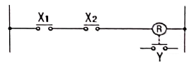
- AND회로
- OR회로
- NOT회로
- NAND회로
(정답률: 68%)
63. 암페어의 오른손 법칙이 적용되는 기기는?
- 저항
- 축전지
- 난방코일
- 솔레노이트 밸브
(정답률: 56%)
64. 건축화조명에 관한 설명으로 옳지 않은 것은?
- 조명기구 배치방식에 의하면 거의 전반조명방식에 해당된다.
- 조명기구 배광방식에 의하면 거의 직접조명방식에 해당된다.
- 건축물의 천장이나 벽을 조명기구 겸용으로 마무리하는 것이다.
- 천장면 이용방식으로는 다운라이트, 코퍼라이트, 광천장 조명 등이 있다.
(정답률: 63%)
65. 저압옥내배선 공사 중 점검할 수 없는 은폐된 장소에서 시설할 수 없는 공사는?
- 금속관공사
- 금속덕트공사
- 2종 가요전선관 공사
- 합성수지관(CD관 제외) 공사
(정답률: 53%)
66. 연결송수관설비 방수구의 호스접결구의 설치위치로 옳은 것은?
- 바닥으로부터 높이 0.5m 이상 1m 이하의 위치
- 바닥으로부터 높이 0.5m 이상 1.5m 이하의 위치
- 바닥으로부터 높이 1m 이상 1.5m 이하의 위치
- 바닥으로부터 높이 1m 이상 2m 이하의 위치
(정답률: 56%)
67. 소화설비의 소화방법에 관한 설명으로 옳지 않은 것은?
- 물분무소화설비는 제거 소화법이다.
- 옥내소화전설비는 냉각 소화법이다.
- 스프링클러설비는 냉각 소화법이다.
- 불연성가스 소화설비는 질식 소화법이다.
(정답률: 64%)
68. 저항 R과 인덕턴스 L의 병렬회로에 있어서 전류와 전압의 위상관계는?
- 전류는 전압보다 뒤진다.
- 전류와 전압은 동상이다.
- 전류는 전압보다 45° 앞선다.
- 전류는 전압보다 90° 앞선다.
(정답률: 49%)
69. 수용장소의 수전설비용량에 대한 최대 수용전력의 비율을 백분율로 나타낸 것은?
- 수용률
- 부등률
- 역률
- 부하율
(정답률: 68%)
70. 다음 설명에 알맞은 피드백 제어계의 구성요소는?
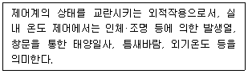
- 외란
- 제어대상
- 제어편차
- 주 피드백 신호
(정답률: 69%)
71. 광원에서 나가는 전광속 대비 피조면에 도달하는 광속의 비율을 의미하는 것은?
- 이용률
- 조명률
- 유지률
- 감광보상률
(정답률: 61%)
72. 주파수가 120[Hz]인 교류 파형의 주기는?
- 약 0.083 [sec]
- 약 0.0083 [sec]
- 약 0.00083 [sec]
- 약 0.000083 [sec]
(정답률: 59%)
73. 인터폰설비의 통화망 구성 방식에 따른 구분에 속하지 않는 것은?
- 모자식
- 상호식
- 복합식
- 개별식
(정답률: 56%)
74. 두 개의 전극을 이용하여 정전용량이 큰 콘덴서를 만들기 위한 방법으로 알맞은 것은?
- 극판의 면적을 작게 한다.
- 극판의 거리를 멀게 한다.
- 극판 사이의 전압을 높게 한다.
- 극판 사이에 유전체를 삽입한다.
(정답률: 60%)
75. 스프링클러설비의 알람밸브에 리타딩챔버를 설치하는 주된 목적은?
- 오보를 방지한다.
- 자동배수를 한다.
- 방수압을 시험한다.
- 가압수의 온도를 검지한다.
(정답률: 68%)
76. 전기용접기의 주된 원리는 무엇을 응용한 것인가?
- 전자력
- 자기유도
- 전자유도
- 줄(Joule)열
(정답률: 66%)
77. 급기팬에 220[V]의 교류전압을 가하니 10[A]의 전류가 전압보다 60° 뒤져서 흐른다. 이 급기팬을 2시간 사용할 때의 소비전력량은?
- 0.55[kWh]
- 2.2[kWh]
- 4[kWh]
- 792[kWh]
(정답률: 50%)
78. 자동화재탐지설비의 하나의 경계구역의 면적은 최대 얼마 이하로 하는가? (단, 해당 특정소방대상물의 주된 출입구에서 그 내부 전체가 보이는 것 제외)
- 150 m2
- 300 m2
- 500 m2
- 600 m2
(정답률: 48%)
79. 소방차로부터 스프링클러설비에 송수할 수 있는 송수구에 관한 기준 내용으로 옳지 않은 것은?
- 구경 65mm의 단구형으로 할 것
- 송수구에는 이물질을 막기 위한 마개를 씌울 것
- 지면을부터 높이가 0.5m 이상 1m 이하의 위치에 설치할 것
- 송수구의 가까운 부분에 자동배수밸브(또는 직경 5mm의 배수공) 및 체크밸브를 설치할 것
(정답률: 60%)
80. 다음 중 배선설비에 사용되는 전선의 굵기를 결정할 때 고려해야 할 요소가 아닌 것은?
- 전압강하
- 허용전류
- 기계적강도
- 전선관 규격
(정답률: 59%)
5과목: 건축설비관계법규
81. 건축물의 바깥쪽에 설치하는 피난계단의 구조에 관한 기준 내용으로 옳지 않은 것은?
- 계단의 유효너비는 0.9m 이상으로 할 것
- 계단은 내화구조로 하고 지상까지 직접 연결되도록 할 것
- 건축물의 내부에서 계단으로 통하는 출입구에는 갑종방화문을 설치할 것
- 계단은 그 계단으로 통하는 출입구외의 창문 등으로부터 1m 이상의 거리를 두고 설치할 것
(정답률: 59%)
82. 건축법령상 다중이용 건축물에 속하지 않는 것은? (단, 15층 이하이며, 해당 용도로 쓰는 바닥면적의 합계가 5000m2 이상인 건축물)
- 종교시설
- 판매시설
- 위락시설
- 의료시설 중 종합병원
(정답률: 48%)
83. 다음은 옥내소화전설비를 설치하여야 하는 특정소방대상물에 대한 기준 내용이다. ( ) 안에 알맞은 것은?
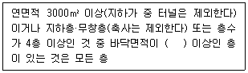
- 300m2
- 600m2
- 1000m2
- 1200m2
(정답률: 47%)
84. 방송 공동수신설비를 설치하여야 하는 대상 건축물에 속하지 않는 것은?
- 아파트
- 연립주택
- 다가구주택
- 다세대주택
(정답률: 64%)
85. 배연설비의 설치에 관한 기준 내용으로 옳지 않은 것은?
- 배연창의 유효면적은 2m2 이상으로 할 것
- 배연구는 예비전원에 의하여 열 수 있도록 할 것
- 배연구는 연기감지기 또는 열감지기에 의하여 자동으로 열 수 있는 구조로 할 것
- 건축물이 방화구획으로 구획된 경우에는 그 구획마다 1개소 이상의 배연창을 설치할 것
(정답률: 66%)
86. 욕실 또는 조리장의 바닥과 그 바닥으로부터 높이 1m까지의 안벽의 마감을 내수재료로 하여야 하는 대상에 속하지 않는 것은?
- 아파트의 욕실
- 숙박시설의 욕실
- 제1종 근린생활시설 중 목욕장의 욕실
- 제1종 근린생활시설 중 휴게음식점의 조리장
(정답률: 61%)
87. 판매시설의 경우, 모든 층에 스프링클러설비를 설치하여야 하는 특정소방대상물 기준으로 옳은 것은?
- 바닥면적 합계가 3000m2 이상인 것
- 바닥면적 합계가 5000m2 이상인 것
- 바닥면적 합계가 7000m2 이상인 것
- 바닥면적 합계가 10000m2 이상인 것
(정답률: 53%)
88. 건축허가등을 할 때 미리 소방본부장 또는 소방서장의 동의를 받아야 하는 대상 건축물의 층수 기준은?
- 3층 이상
- 6층 이상
- 10층 이상
- 12층 이상
(정답률: 62%)
89. 교육연구시설 중 학교의 교실 간 소음 방지를 위해 설치하는 경계벽의 구조로 옳지 않은 것은?
- 석졸서 두께가 15cm 인 것
- 철근콘크리트조로서 두께가 12cm 인 것
- 무근콘크리트조로서 두께가 15cm 인 것
- 콘크리트블록조로서 두께가 15cm 인 것
(정답률: 47%)
90. 건축물의 에너지절약설계기준에 따른 건축부분의 권장사항으로 옳지 않은 것은?
- 공동주택은 인동간격을 넓게 하여 저층부의 일사 수열량을 증대시킨다.
- 건축물의 첵적에 대한 외피면적의 비 또는 연면적에 대한 외피면적의 비는 가능한 크게 한다.
- 거실의 층고 및 반자 높이는 실의 용도와 기능에 지장을 주지 않는 범위 내에서 가능한 낮게 한다.
- 건물의 창 및 문은 가능한 작게 설계하고, 특히 열손실이 많은 북측 거실의 창 및 문의 면적은 최소화한다.
(정답률: 61%)
91. 다음 중 6층 이상의 거실면적의 합계가 6000m2인 경우, 설치하여야 하는 승용승강기의 최소대수가 가장 많은 것은? (단, 8인승 승용승강기의 경우)
- 업무시설
- 숙박시설
- 문화 및 집회시설 중 전시장
- 문화 및 집회시설 중 공연장
(정답률: 62%)
92. 계단의 설치에 관한 기준 내용으로 옳지 않은 것은?
- 계단의 유효 높이는 1.8m 이상으로 할 것
- 중학교의 계단인 경우 단높이는 18cm 이하, 단너비는 26cm 이상으로 할 것
- 너비 3m를 넘는 계단에는 계단의 중간에 너비 3m 이내마다 난간을 설치할 것
- 높이 3m를 넘는 계단에는 높이 3m 이내마다 유효너비 1.2m 이상의 계단참을 설치할 것
(정답률: 47%)
93. 건축물 관련 건축기준의 허용오차 범위로 옳지 않은 것은?
- 출구 너비 : 2% 이내
- 반자 높이 : 2% 이내
- 벽체 두께 : 2% 이내
- 바닥판 두께 : 3% 이내
(정답률: 45%)
94. 다음 중 신고 대상에 속하는 용도변경은?
- 전기통신시설군에서 자동차 관련 시설군으로의 용도변경
- 근린생활시설군에서 주거업무시설군으로의 용도변경
- 영업시설군에서 문화 및 집회시설군으로의 용도변경
- 교육 및 복지시설군에서 산업 등의 시설군으로의 용도변경
(정답률: 39%)
95. 건축법령상 제1종 근린생활시설에 속하지 않는 것은?
- 이용원
- 치과의원
- 마을회관
- 일반음식점
(정답률: 60%)
96. 주요구조부를 내화구조로 하여야 하는 대상건축물 기준으로 옳지 않은 것은?
- 종교시설의 용도로 쓰는 건축물로서 집회실의 바닥면적의 합계가 200m2 이상인 건축물
- 장례시설의 용도로 쓰는 건축물로서 집회실의 바닥면적의 합계가 200m2 이상인 건축물
- 판매시설의 용도로 쓰는 건축물로서 그 용도로 쓰는 바닥면적의 합계가 500m2 이상인 건축물
- 공장의 용도로 쓰는 건축물로서 그 용도로 쓰는 바닥면적의 합계가 1000m2 이상인 건축물
(정답률: 46%)
97. 다음은 환기구의 안전 기준 내용이다. ( ) 안에 알맞은 것은?
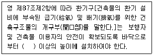
- 1m
- 2m
- 3m
- 4m
(정답률: 70%)
98. 다음의 소방시설 중 소화활동설비에 속하지 않는 것은?
- 제연설비
- 비상방송설비
- 연소방지설비
- 무선통신보조설비
(정답률: 55%)
99. 건축물의 에너지절약 설계기준에 따른 야간단열장치의 총열관류저항은 최소 얼마 이상되어야 하는가?
- 0.1 m2·K/W 이상
- 0.2 m2·K/W 이상
- 0.3 m2·K/W 이상
- 0.4 m2·K/W 이상
(정답률: 54%)
100. 건축물의 설비기준 등에 관한 규칙에 따라 피뢰설비를 설비하여야 하는 대상 건축물의 높이 기준은?
- 10m 이상
- 15m 이상
- 20m 이상
- 30m 이상
(정답률: 63%)